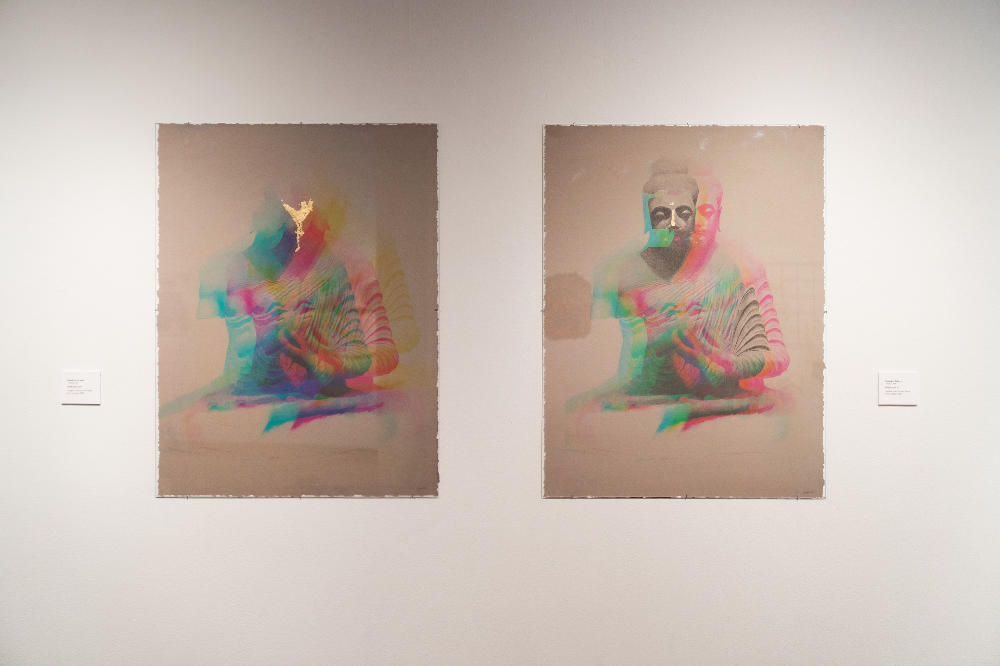
Drawing, devotion
and the images we inherit.
What survives when an image crosses from one world into another?
Across three bodies of work, gautama follows sacred figures through cultural exchange and the recursive passage between hand and machine. Graphite, gold, spectral color, and digital distortion become ways of asking what we inherit—and what we will choose to worship next.
Bodhisattva, installation view.
Mixed media and gold leaf on paper.
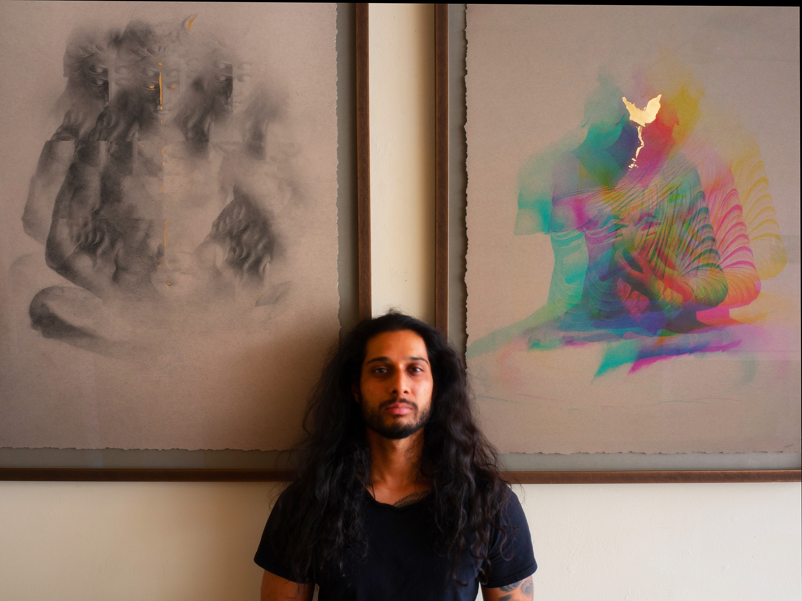
Shaped by a family history of immigration and cultural exchange, his drawings trace how culture and religion transform as they move across time and borders — through the membranes between nations, faiths, and eras, and what survives the crossing.
His work asks why humans worship, and how we choose the beings we venerate. How does the culture of the present bind us to the past? And what will it carry into a future increasingly shaped by our machines?
gautama attended classical atelier programs at both the Gage Academy of Art in Seattle, and Vitruvian Art Studio in Chicago. He holds a degree in mathematics and computer science, and has a decade of experience in neuroscience. His work has been exhibited from Seattle to Mexico City to Los Angeles.
Drawing from South Asian iconography, Bodhisattva imagines the future of human worship.
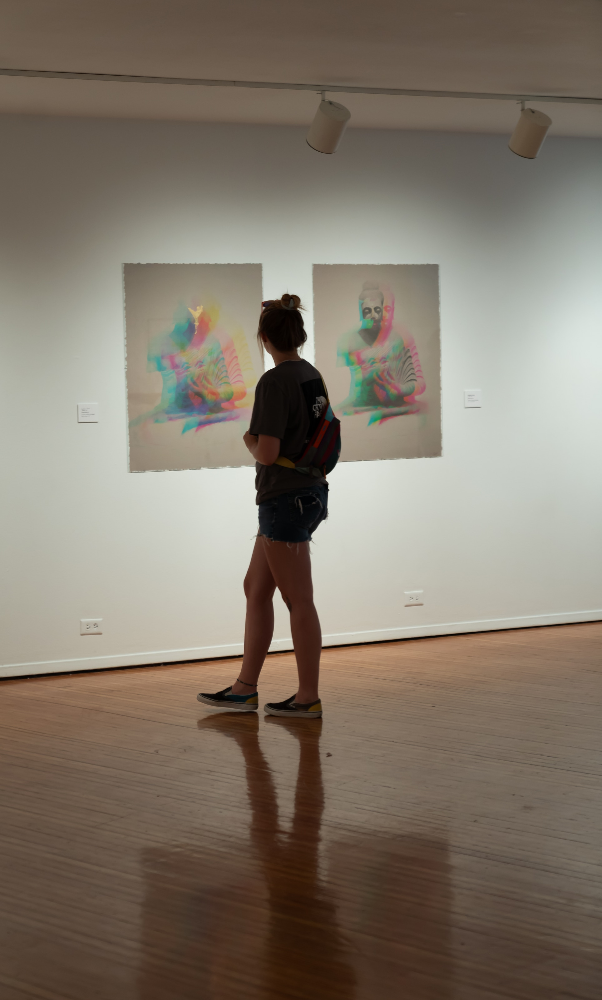
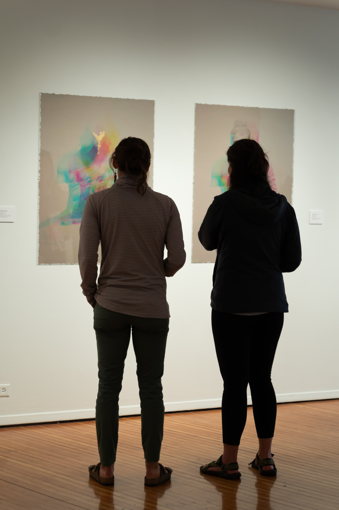
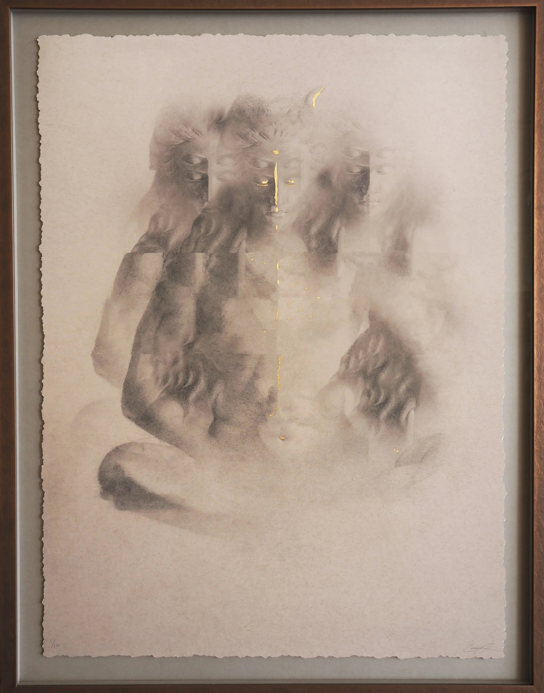
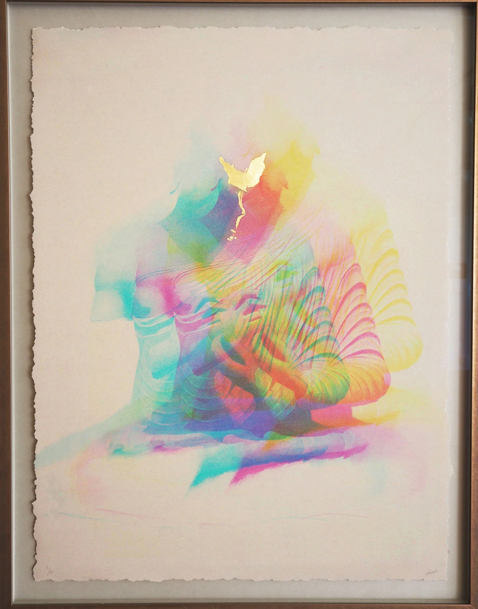
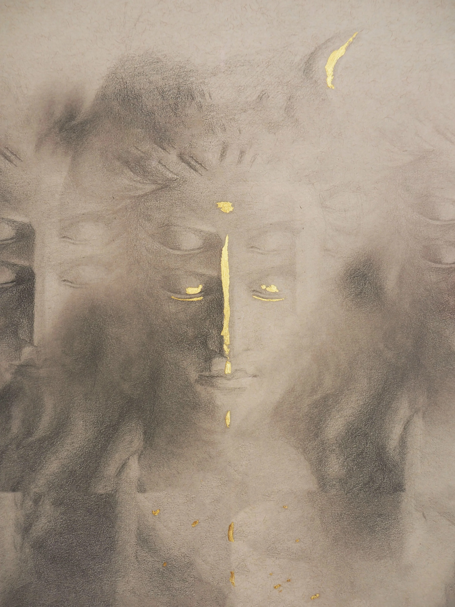
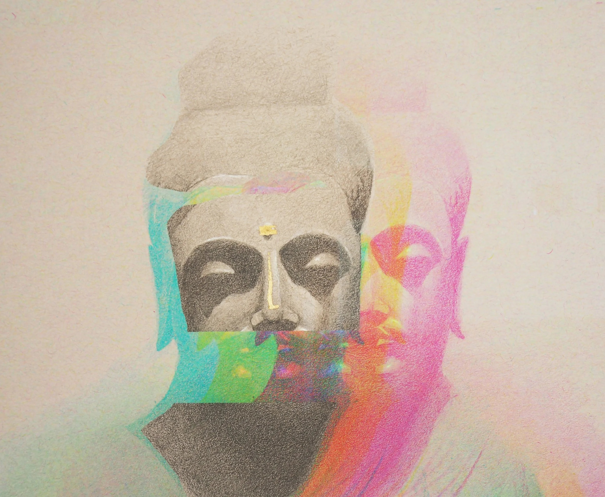
Each image begins by hand in graphite, then is scanned, printed, and drawn into again — a cycle repeated until the line between the physical and the digital dissolves. The distortions that accumulate are not errors but relics: evidence of an image carried back and forth between two worlds.
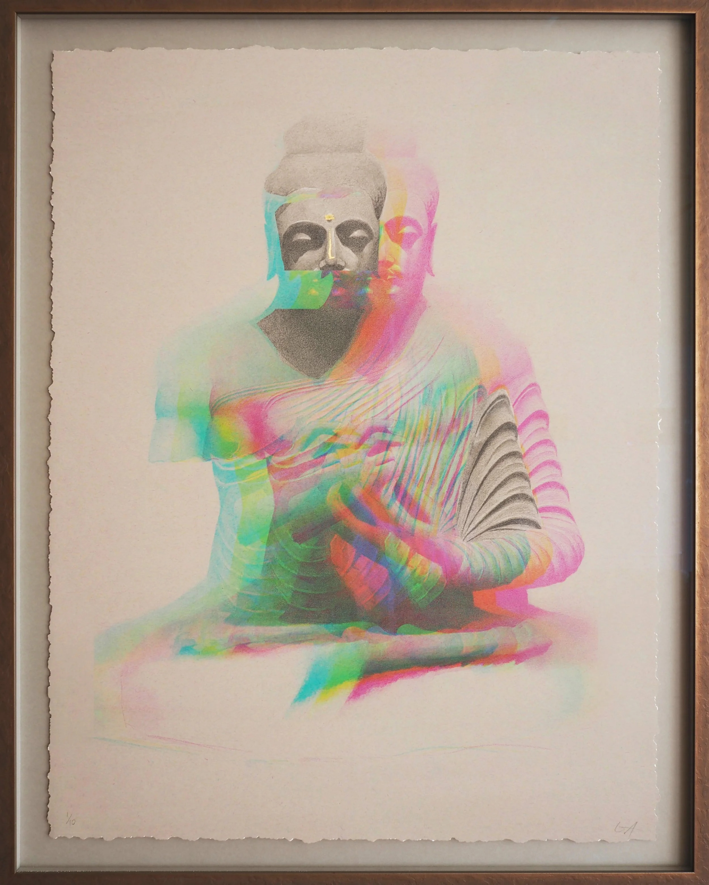
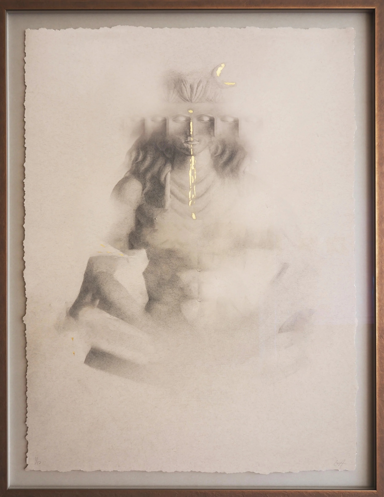
As we grow more intimate with our machines, our devotion may migrate from the natural world toward synthetic ones. These works sit at that threshold, asking what we will choose to venerate next, and how much of our inheritance we will carry across.
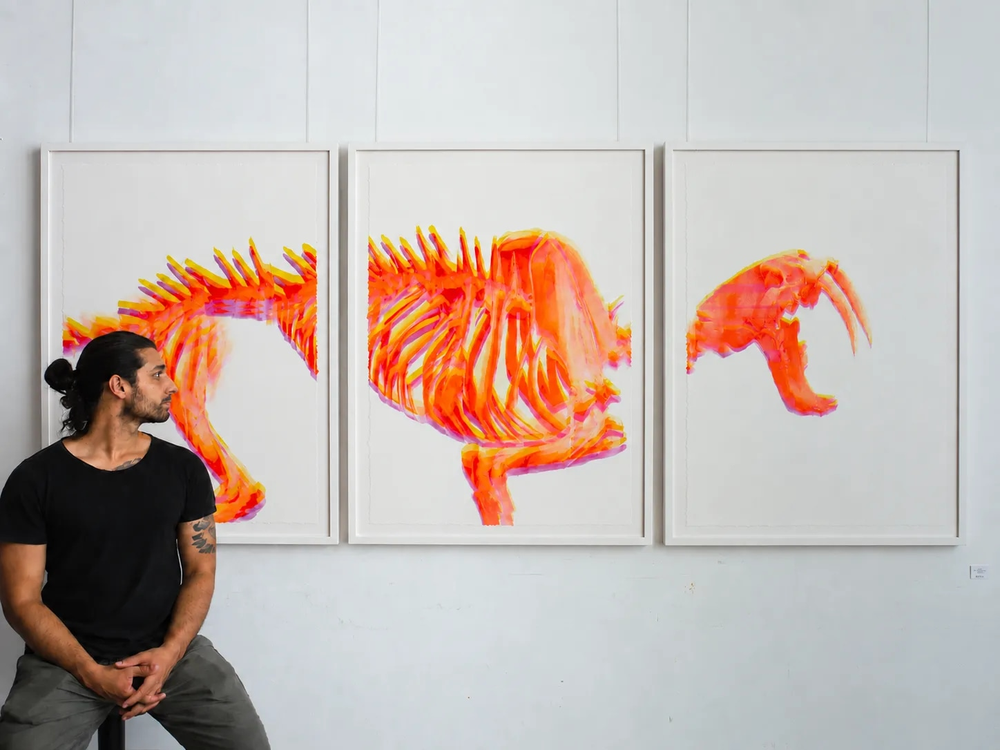
Asiatic is a composite deity assembled from the skeletons of extinct megafauna — its face the skull of Smilodon fatalis, the saber-toothed cat that once hunted alongside, and upon, early humans.
The image is built through the same iterative process that runs through this body of work: drawn by hand, scanned, altered, printed, and drawn again, until the digital and physical leave permanent marks on one another. Those marks remain in the finished drawing as artifacts of its making.
It is a meditation on the beings we choose to worship. Early humans revered the great predators that shaped them; as we now build conscious things inside our machines, I wonder whether these new entities will become our objects of veneration — and whether, like the Smilodon, they may one day turn on their makers.
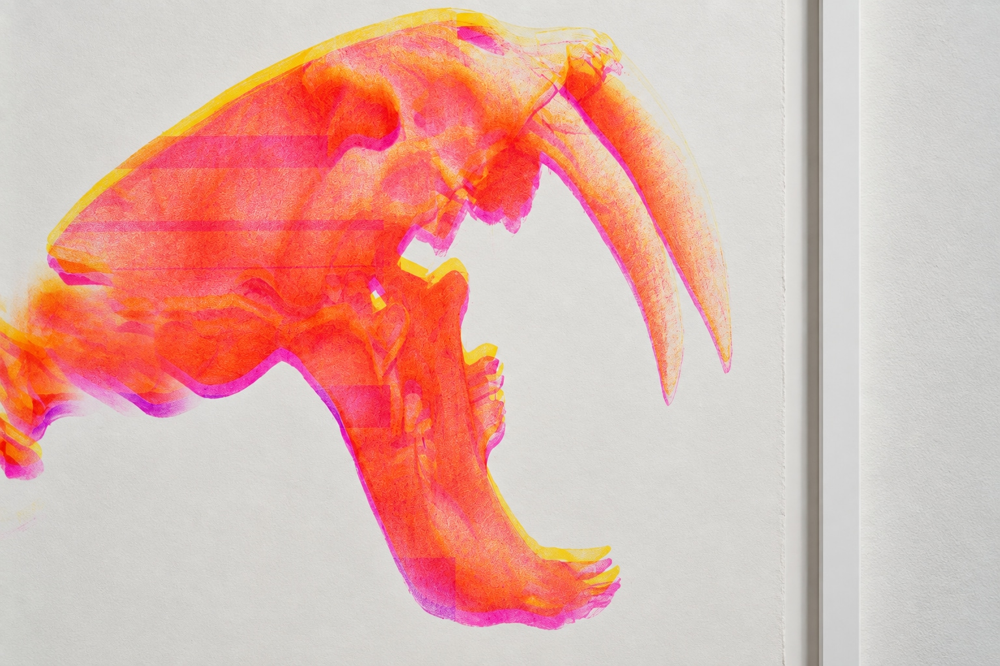
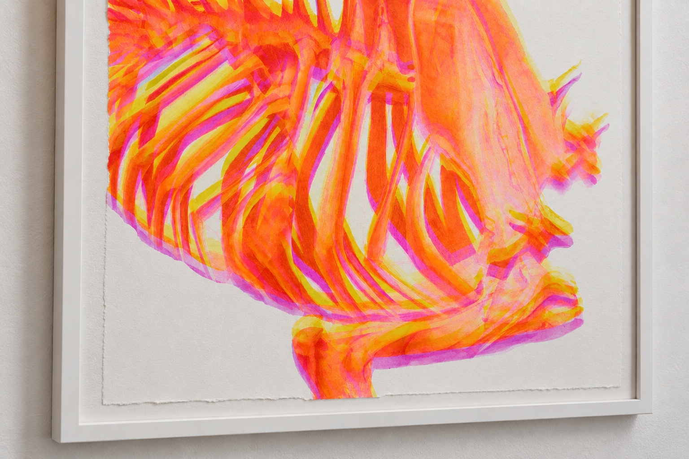
Contextual Modernism takes a familiar figure of Western devotion — the veiled Virgin Mary — and lets it drift into a South Asian frame.
The image is drawn by hand in graphite and charcoal, then digitized, altered, printed, and drawn over again. Each cycle leaves permanent distortions, echoes of the way culture warps as it passes through the digital.
Through those distortions a third eye, an ajna chakra, opens on the Virgin's brow. The gesture inverts a long history: just as South Asian imagery has been absorbed into the Western lexicon, here Western iconography is claimed and remade.
In the internet age, an artifact's origins rarely survive the crossing intact.
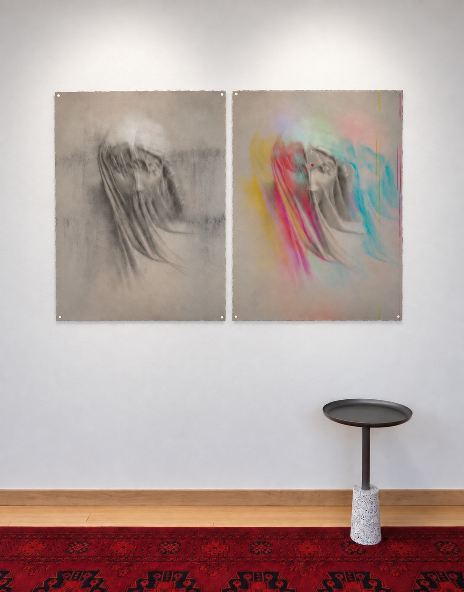
Bodhisattva
Art Gallery Studios, Virtual Exhibition
Pink Tide
Ventura, CA
Clavo Moviemento Feria de Arte
Mexico City, Mexico
Timescape(s)
Moscow Contemporary, Moscow, ID
Works
Axis Gallery, Seattle, WA
Reverence In Uncertainty
Columbia City Gallery, Seattle, WA
Movement/Journey
Columbia City Gallery, Seattle, WA
Gage Academy of Art, KoH Atelier
Bachelor of Science, Computer Science & Mathematics, University of Illinois